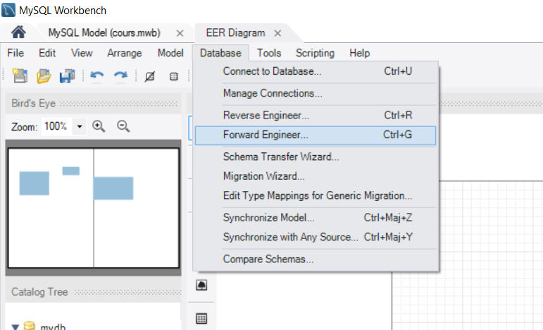
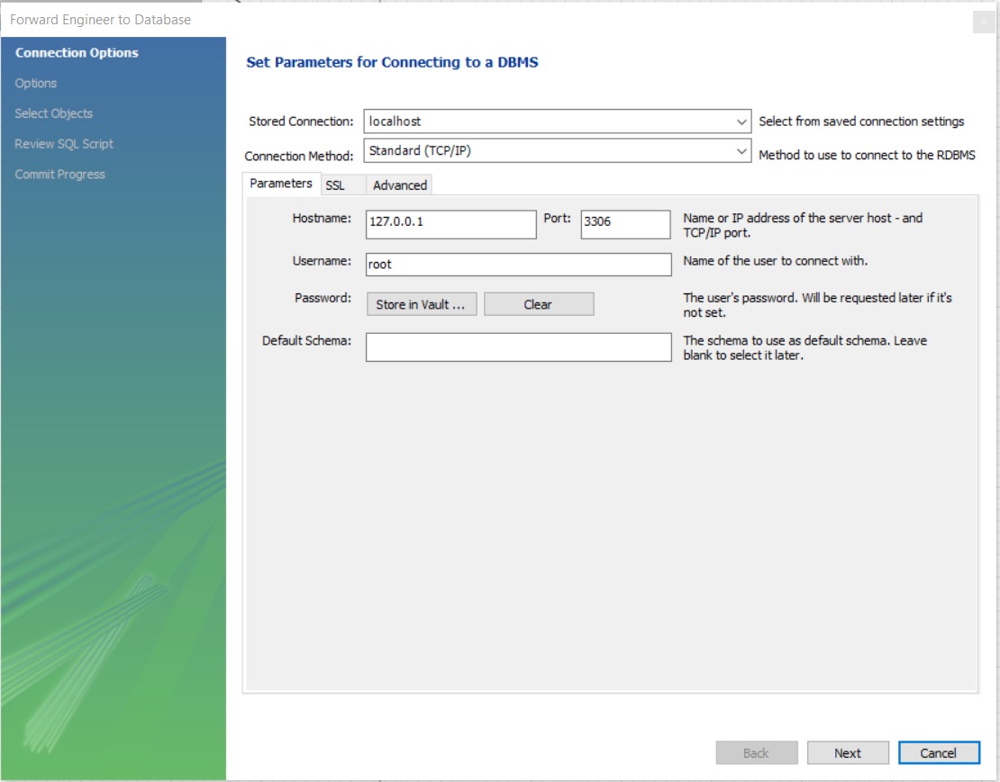
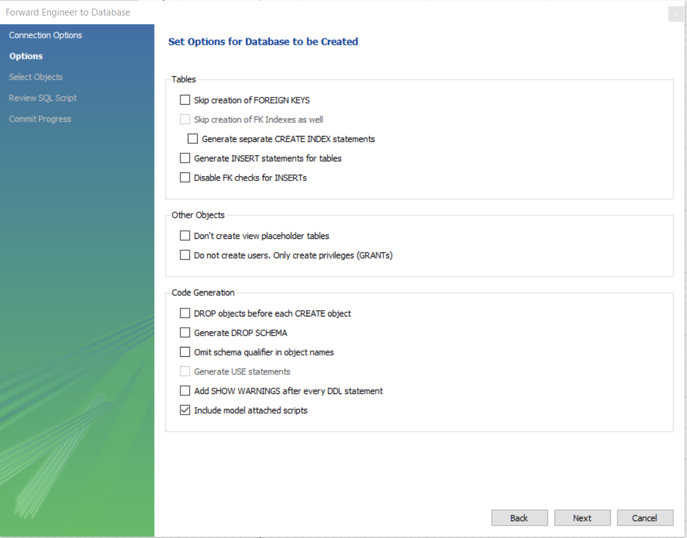
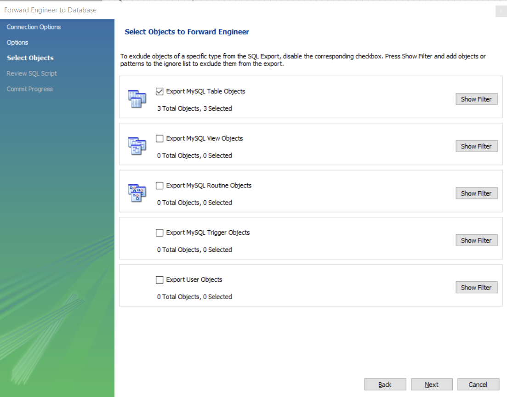
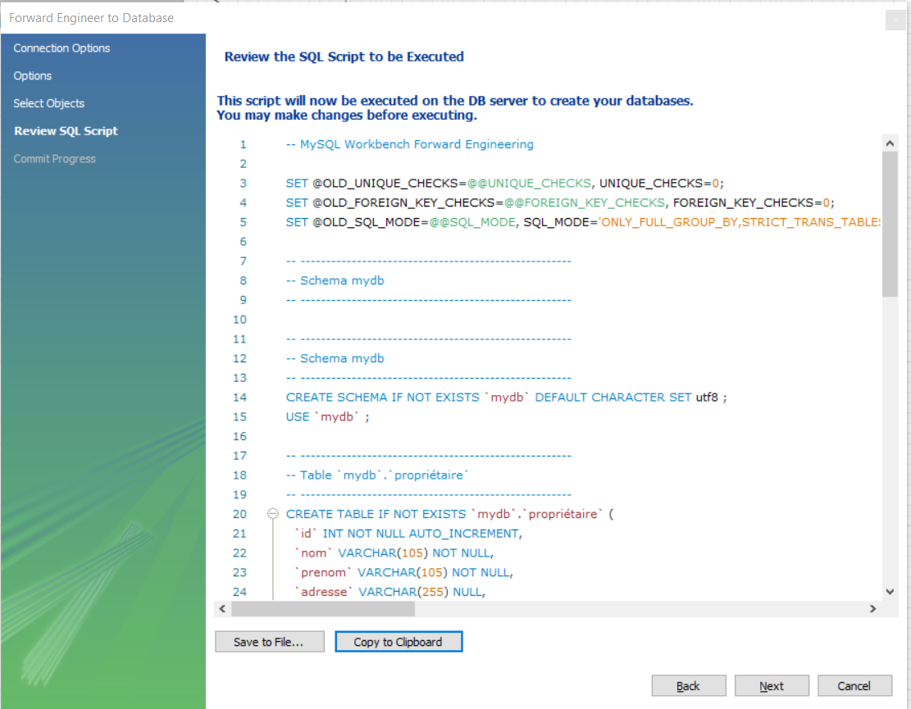
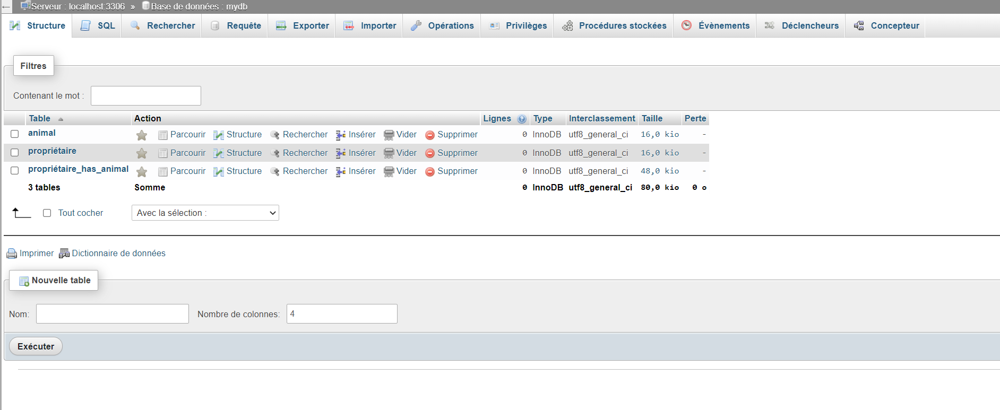

Lorsque nous utilisons MySQL Workbench, nous pouvons communiquer avec la BDD et effectuer des opérations dessus.
Si nous avons créé un Modèle Conceptuel de Données (MCD), nous pouvons le transmettre à MySQL, pour qu'il nous créé la base correspondante.
Voici comment faire.
Cliquez sur Database/Forward Engineer...

Trasnférer le modèle avec MySQL Workbench
Dans le wizard remplissez les informations concernant la connexion à votre BDD

Première étape du transfert
Sélectionnez les options de création souhaitées

Seconde étape du transfert
Sélectionnez ce que vous souhiatez exporter vers votre BDD

Troisième étape du transfert
MySQL Workbench vous propose de voir la requête qui sera éxecuter, ce qui vous permettra de la contrôler.

Quatrième étape du transfert
On verra comment créer cette requête plus tard, mais voici à quoi elle ressemble :
-- MySQL Workbench Forward Engineering
SET @OLD_UNIQUE_CHECKS=@@UNIQUE_CHECKS, UNIQUE_CHECKS=0;
SET @OLD_FOREIGN_KEY_CHECKS=@@FOREIGN_KEY_CHECKS, FOREIGN_KEY_CHECKS=0;
SET @OLD_SQL_MODE=@@SQL_MODE, SQL_MODE='ONLY_FULL_GROUP_BY,STRICT_TRANS_TABLES,NO_ZERO_IN_DATE,NO_ZERO_DATE,ERROR_FOR_DIVISION_BY_ZERO,NO_ENGINE_SUBSTITUTION';
-- -----------------------------------------------------
-- Schema mydb
-- -----------------------------------------------------
-- -----------------------------------------------------
-- Schema mydb
-- -----------------------------------------------------
CREATE SCHEMA IF NOT EXISTS `mydb` DEFAULT CHARACTER SET utf8 ;
USE `mydb` ;
-- -----------------------------------------------------
-- Table `mydb`.`propriétaire`
-- -----------------------------------------------------
CREATE TABLE IF NOT EXISTS `mydb`.`propriétaire` (
`id` INT NOT NULL AUTO_INCREMENT,
`nom` VARCHAR(105) NOT NULL,
`prenom` VARCHAR(105) NOT NULL,
`adresse` VARCHAR(255) NULL,
`ville` VARCHAR(165) NULL,
`code_postal` CHAR(5) NULL,
PRIMARY KEY (`id`))
ENGINE = InnoDB;
-- -----------------------------------------------------
-- Table `mydb`.`animal`
-- -----------------------------------------------------
CREATE TABLE IF NOT EXISTS `mydb`.`animal` (
`id` INT NOT NULL AUTO_INCREMENT,
`nom` VARCHAR(20) NULL,
`race` VARCHAR(45) NULL,
`type` VARCHAR(45) NULL,
PRIMARY KEY (`id`))
ENGINE = InnoDB;
-- -----------------------------------------------------
-- Table `mydb`.`propriétaire_has_animal`
-- -----------------------------------------------------
CREATE TABLE IF NOT EXISTS `mydb`.`propriétaire_has_animal` (
`propriétaire_id` INT NOT NULL,
`animal_id` INT NOT NULL,
PRIMARY KEY (`propriétaire_id`, `animal_id`),
INDEX `fk_propriétaire_has_animal_animal1_idx` (`animal_id` ASC),
INDEX `fk_propriétaire_has_animal_propriétaire_idx` (`propriétaire_id` ASC),
CONSTRAINT `fk_propriétaire_has_animal_propriétaire`
FOREIGN KEY (`propriétaire_id`)
REFERENCES `mydb`.`propriétaire` (`id`)
ON DELETE NO ACTION
ON UPDATE NO ACTION,
CONSTRAINT `fk_propriétaire_has_animal_animal1`
FOREIGN KEY (`animal_id`)
REFERENCES `mydb`.`animal` (`id`)
ON DELETE NO ACTION
ON UPDATE NO ACTION)
ENGINE = InnoDB;
SET SQL_MODE=@OLD_SQL_MODE;
SET FOREIGN_KEY_CHECKS=@OLD_FOREIGN_KEY_CHECKS;
SET UNIQUE_CHECKS=@OLD_UNIQUE_CHECKS;
Une fois terminé, vous pourrez constater le résultat dans PHPMyAdmin

Résultat du transfert dans PHPMyAdmin
De la BDD vers MySQL Workbench
De la même manière que vous pouvez transférer un modèle vers votre BDD, vous pouvez effectuer la démarche inverse.
Cela peut s'avérer utile si vous arrivez sur un projet déjà bien avancé et que vous avez besoin d'analyser et de comprendre la BDD.
Pour se faire il vous faut, aller dans le même menu et choisir l'option de reverse : Database/Reverse Engineer ....
Ensuite à vous de suivre le wizard.